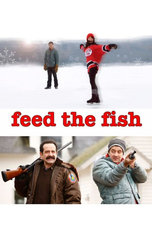

 
 IMDB-Wertung: 6.0 / 10
IMDB-Wertung: 6.0 / 10  Metascore:
Metascore: 
Schreibblockaden sind der größte Feind des Autors. Das bekommt auch Joe Peterson zu spüren. Sein erstes Kinderbuch war ein voller Erfolg, aber das zweite Buch will sich einfach nicht selbst schreiben. Eine Blockade plagt den Kinderbuchautor, der sich von seiner wunderschönen, aber auch sehr ungeduldigen Freundin nicht bedrängen lassen will. Die beiden legen eine Beziehungspause ein, welche Joe mit einem Urlaub in einer Kleinstadt in Wisconsin ausfüllt. Als sein Freund und Begleiter JP von einem Dachs gebissen wird, müssen sie erst einmal dort bleiben. Joe wird langsam wird mit den Bewohnern und verliebt sich in Sif, die attraktive Tochter des örtlichen Sheriffs. Der hat aber was gegen Fremde. Und dann, Trubel, Trubel, steht auch noch das Weihnachtsfest vor der Tür...
Jahr: 2010
Dauer: 91 Minuten
FSK:
Land: USA Studio: Strand ReleasingTonspuren: DTS - ,
Untertitel:
Auflösung: 1080p (1920x1080) Größe: 4802 MB
Genre: Komödie
Regisseur: Michael Matzdorff
Drehbuch: Michael Matzdorff
Soundtrack: TD Lind
Darsteller:
Datei: X:\NEU\Feed The Fish (2010, FSK, 1920x1080) 3D.mkv seit 24.04.2019
 Es gibt insgesamt 187 Filme in der Gruppe 'NEU'
Es gibt insgesamt 187 Filme in der Gruppe 'NEU'